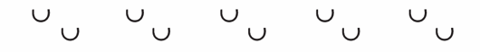

(1) Der Unternehmer hat Beginn, Änderungen und Ende von Arbeiten im Gleisbereich und die erforderlichen Räumzeiten der für den Bahnbetrieb zuständigen Stelle so rechtzeitig anzuzeigen, dass diese die erforderlichen Sicherungsmaßnahmen gegen die Gefahren aus dem Bahnbetrieb anordnen oder durchführen kann. Mit den Arbeiten darf erst begonnen werden, wenn die Sicherungsmaßnahmen durchgeführt sind. DA
(2) Der Unternehmer hat vor Beginn von Arbeiten im Gleisbereich sich oder seinen Beauftragten über die Gefahren durch den Bahnbetrieb und deren Abwendung an der Arbeitsstelle sowie auf dem Weg zur Arbeitsstelle und zurück von der für den Bahnbetrieb zuständigen Stelle unterweisen zu lassen. Dies gilt auch bei Änderung der Gefahrensituation. DA
(3) Der Unternehmer hat vor Beginn von Arbeiten die Versicherten über die Gefahren und deren Abwendung entsprechend Absatz 2 zu unterweisen.
(4) Der Unternehmer hat Versicherte,
(5) Der Unternehmer hat dafür zu sorgen, daß Versicherte, die sich als einzelne besonders unterwiesene Personen im Bereich nicht gesperrter Gleise aufhalten, nach Bedarf und bei Änderungen der bahnbetrieblich bedingten Gefahrensituation unverzüglich über neue Gefahren unterrichtet werden. DA
(6) Der Unternehmer hat die Versicherten anzuweisen, die Anordnungen der für den Bahnbetrieb zuständigen Stelle und die Warnsignale zu befolgen. DA
(7) Der Unternehmer darf mit Arbeiten außerhalb des Gleisbereiches, bei denen Versicherte, Maschinen oder Geräte in den Gleisbereich geraten können, erst beginnen, wenn die Erlaubnis der für den Bahnbetrieb zuständigen Stelle vorliegt und diese die erforderlichen Sicherungsmaßnahmen gegen die Gefahren aus dem Bahnbetrieb angeordnet oder durchgeführt hat.
(8) Der Unternehmer hat Beginn und Ende der täglichen Arbeiten sowie der Arbeitspausen der Sicherungsaufsicht nach § 4 Abs. 2 mitzuteilen. DA
Räumzeit ist die Zeit, die benötigt wird, um den Gleisbereich einschließlich von Maschinen und Geräten ohne Hast zu räumen.
Die Unterweisung beinhaltet insbesondere, wie bei der Annäherung von Schienenfahrzeugen vor diesen Schutz gefunden werden kann, welche Warnsignale gelten und wie diese gegeben werden.
Bei Arbeiten im Bereich von Gleisen der Deutschen Bahn AG ist maßgeblicher Ansprechpartner für die Unterweisung über die Sicherung gegen Gefahren aus dem Bahnbetrieb diejenige Dienststelle des Bahnbetreibers, die den Auftrag bzw. aufgrund anderer vertraglicher Regelungen die Erlaubnis für die Arbeiten erteilt hat. Die Unterweisung über die getroffenen oder durchzuführenden Maßnahmen erfolgt durch die Sicherungsaufsicht des Bahnbetreibers oder eines von ihm beauftragten Sicherungsunternehmens.
Bedarf für eine Unterrichtung kann z.B. gegeben sein, bei
Änderungen der bahnbetrieblich bedingten Gefahrensituation können z. B. entstehen durch:
Warnsignale werden, sofern die für den Bahnbetrieb zuständige Stelle keine anderen Signale festgelegt hat,
gegeben.
Die Warnsignale nach ESO bzw. nach DS 301 werden als Rottenwarnsignale bezeichnet; sie werden mit dem Mehrklangsignalhorn oder Tyfon gegeben und sind auch zu befolgen, wenn sie nur in einer Tonlage gehört werden. Sie haben folgende Bedeutung:
Signal Ro 1
Vorsicht! Im Nachbargleis nähern sich Fahrzeuge!
Mit dem Horn oder Tyfon ein längerer Ton als Mischklang aus zwei verschieden hohen Tönen.
Signal Ro 2
Arbeitsgleise räumen!
Mit dem Horn oder Tyfon zwei lange Töne nacheinander in verschiedener Tonlage.
Signal Ro 3
Arbeitsgleise schnellstens räumen!

Mit dem Horn oder Tyfon mindestens fünfmal je zwei kurze Töne nacheinander in verschiedener Tonlage.
Sicherungsaufsicht siehe § 4 Abs. 2.